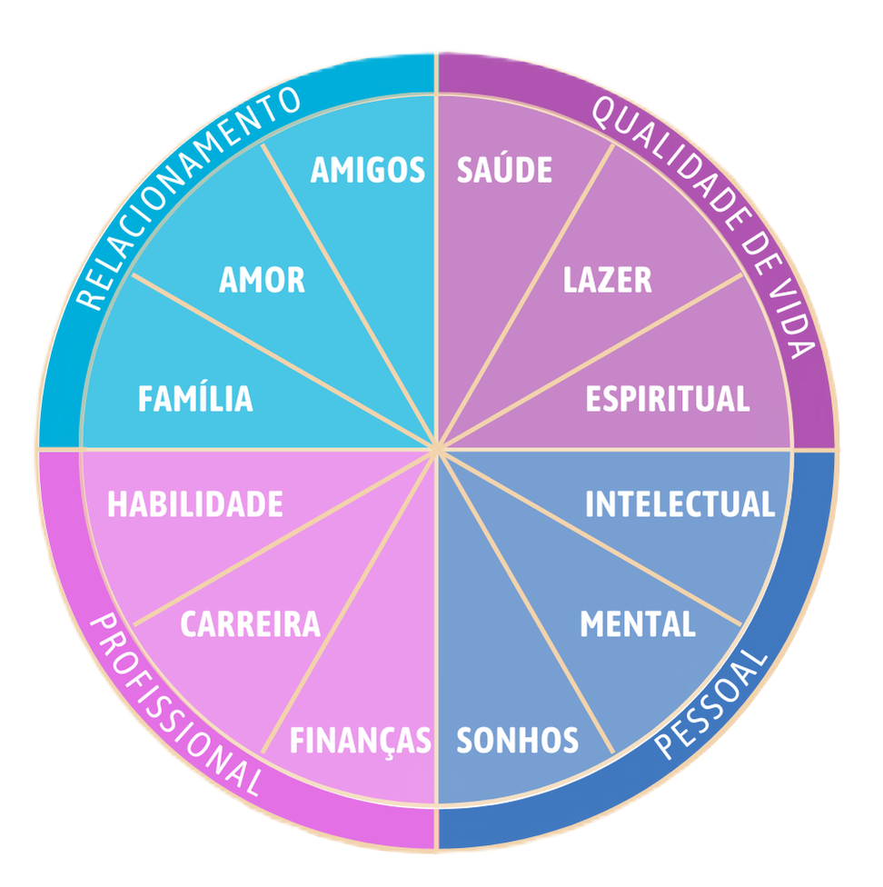

@for (method of smarts; track $index) {
}
{{ method.letter }}
{{ method.translate | titlecase }}
{{ method.description }}
Palavra chave:
{{ method.key }}
Ao criar uma meta, os campos que são preenchidos levam o nome da palavra chave de cada letra da sigla
4 áreas da vida divididas em 12 subáreas

Defina metas de acordo com as áreas da sua vida e desenvolva atividades mais objetivas